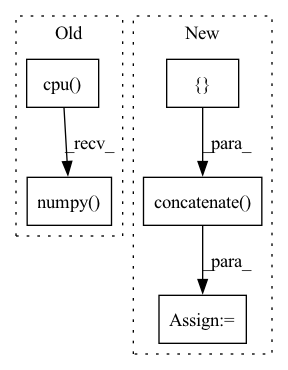

Pattern ID :21572
Before Change
observation, deterministic, return_log_prob=True
)[-1]
logits_pi = logits_pi.detach().cpu().numpy().flatten()
logits_adv = logits_adv.detach().cpu().numpy() .flatten()
return action, log_pi, adv_log_pi, logits_pi, logits_adv
return action, log_pi, adv_log_pi
After Change
else:
mean = actor_distrib.mean.detach().cpu().numpy().flatten()
scale = actor_distrib.scale.detach().cpu().numpy().flatten()
params_pi = np.concatenate([ mean, scale)
mean = adversary_distrib.mean.detach().cpu().numpy().flatten()
scale = adversary_distrib.scale.detach().cpu().numpy().flatten()
params_adv = np.concatenate([mean, scale], -1)
return action, log_pi, adv_log_pi, params_pi, params_advIn pattern: SUPERPATTERN
Frequency: 3
Non-data size: 5
Instances Fragment ID: 68973768
Project Name: yfletberliac/adversarially-guided-actor-critic
Commit Name: 4958ecb8ca6e7e344852f7aa9fc8668cd8cd074b
Time: 2021-07-07
Author: cibeah.cb@gmail.com
File Name: agac_torch/agac/agac_ppo.py
M Class Name: PPO
N Class Name: PPO
M Method Name: select_action(3)
N Method Name: select_action(4)
M Parent Class:
N Parent Class:
M File Name: agac_torch/agac/agac_ppo.py
N File Name: agac_torch/agac/agac_ppo.py
M Start Line: 115
M End Line: 138
N Start Line: 121
N End Line: 146
Before Change
for data in test_loader:
x = data[0].squeeze(0).squeeze(0).detach().cpu().numpy()
y = data[1].squeeze(0).squeeze(0).detach().cpu().numpy()
x_seg = data[2].squeeze(0).squeeze(0).detach().cpu().numpy()
y_seg = data[3].squeeze(0).squeeze(0).detach().cpu().numpy()
x = ants.from_numpy(x)
y = ants.from_numpy(y)
After Change
y_ants = ants.from_numpy(y_seg.astype(np.float32))
reg12 = ants.registration(y, x, "SyNOnly", reg_iterations=(160, 80, 40), syn_metric="meansquares")
def_segs = []
for i in range(x_seg_oh.shape[0]):
x_chan = ants.from_numpy(x_seg_oh[i].astype(np.float32))
def_seg = ants.apply_transforms(fixed=y_ants,
moving=x_chan,
transformlist=reg12["fwdtransforms"], )
// whichtoinvert=[True, False, True, False]
def_segs.append(def_seg.numpy()[None, ...])
def_segs = np.concatenate( def_segs, axis=0)
def_seg = np.argmax(def_segs, axis=0)
flow = np.array(nib_load(reg12["fwdtransforms"][0]), dtype="float32", order="C")
flow = flow[:,:,:,0,:].transpose(3, 0, 1, 2)
Fragment ID: 68973769
Project Name: junyuchen245/transmorph_transformer_for_medical_image_registration
Commit Name: 0612d1a704653ff98a92a228ecaefd2023577062
Time: 2022-09-07
Author: jchen245@jhmi.edu
File Name: IXI/Baseline_traditional_methods/SyN/infer_IXI.py
M Class Name: AnonimousClass
N Class Name: AnonimousClass
M Method Name: main(0)
N Method Name: main(0)
M Parent Class:
N Parent Class:
M File Name: IXI/Baseline_traditional_methods/SyN/infer_IXI.py
N File Name: IXI/Baseline_traditional_methods/SyN/infer_IXI.py
M Start Line: 57
M End Line: 86
N Start Line: 58
N End Line: 96
Before Change
// 统计混淆矩阵
_, predicted = torch.max(outputs.data, 1)
for j in range(len(labels)):
cate_i = labels[j].cpu().numpy()
pre_i = predicted[j].cpu().numpy()
conf_mat[cate_i, pre_i] += 1.
if cate_i != pre_i:
path_error.append((cate_i, pre_i, path_imgs[j])) // 记录错误样本的信息After Change
loss_list = []
path_error = []
loss_mean = 0
acc_batch_list = []
for i, data in enumerate(data_loader):
inputs, labels = data["image"], data["label"]
inputs, labels = inputs.to(device), labels.to(device)
outputs = model(inputs)
loss = loss_f(outputs.cpu(), labels.cpu())
loss_list.append(loss.item())
loss_mean = np.mean(loss_list)
acc_batch_list.append((1 - np.abs(outputs.cpu().detach().numpy() - labels.cpu().detach().numpy())))
ocean_acc = np.concatenate( acc_batch_list, axis=0) .mean(axis=0)
acc_avg = ocean_acc.mean()
return loss_mean, ocean_acc, acc_avg
Fragment ID: 68973771
Project Name: liaorongfan/deeppersonality
Commit Name: 565a883600a2f9be36416c98383ef54294da8ab1
Time: 2021-05-23
Author: 15670381505@163.com
File Name: dpcv/engine/portrait_model_trainer.py
M Class Name: ModelTrainer
N Class Name: ModelTrainer
M Method Name: valid(4)
N Method Name: valid(4)
M Parent Class: object
N Parent Class: object
M File Name: dpcv/engine/portrait_model_trainer.py
N File Name: dpcv/engine/portrait_model_trainer.py
M Start Line: 60
M End Line: 87
N Start Line: 54
N End Line: 71